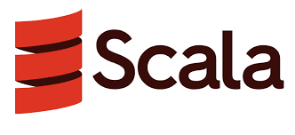
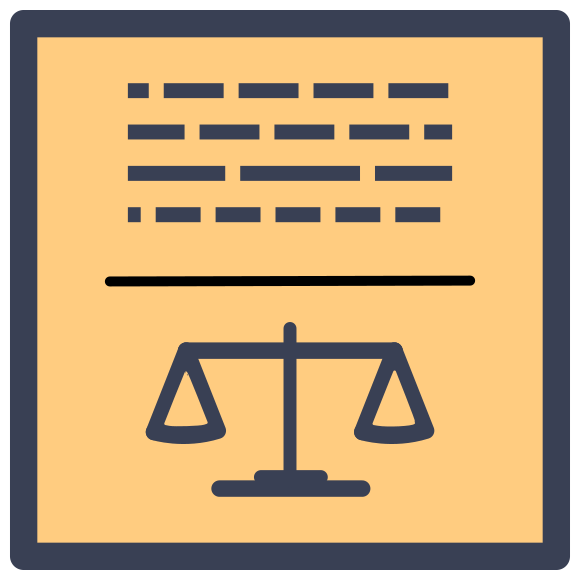

Introduction
Je m'intéresse à l'informatique depuis 6 ans. Si je n'avais pas connu la matière Sciences Numériques Technologique (SNT) au lycée, qui sait vers quel domaine je me serais tourné. Voilà ce que j'ai pu apprendre :
Langages de programmation :
J'ai pu utiliser différents langages à différents niveaux de maîtrises. Et honnêtement c'est un plaisir d'apprendre autant de langages. Les détails quant au niveau de chacun sont en dessous.

Java est le langage que j'ai le plus approfondi et donc que je maîtrise le plus. J'ai pu apprendre beaucoup de choses en programmation objet mais aussi en concurrence. Aux dernières nouvelles j'ai pu connaître les patrons de conception (design pattern) tel qu'observer, decorator et state.
Travaux réalisés :
Course de voiture Snake Blockade
Le langage C n'est pas forcément évident à prendre en main et ce que j'ai pu apprendre sur ce langage n'est pas de tout repos. Cela dit les profs m'ont bien ancré dans ce langage donc c'est un langage assez intéressant. Au plus récent j'ai pu manier les processus père/fils, les pipelines ainsi que les signaux.

Les premiers langages de programmation que j'ai appris à utiliser au lycée et ceux qui m'ont poussé à m'orienter vers l'informatique. Egalement les langages qui m'ont poussé à réaliser ce site en tant que projet personnel. J'ai pu apprendre à gérer la mise en page d'un site et son apparence en allant du placement de balises au paramétrage de chaque élément.

Parmi les premiers langages que j'ai appris à utiliser. C'est un langage intéressant à comprendre, surtout toutes la quantité de données présente dans notre société. La conception de base de donnée m'a motivé à mieux me les représenter. Bien qu'il ne soit pas facile de sélectionner les bonnes données

Un des premiers langages de programmation que j'ai appris à manier avec Spyder, IDE Python. La particularité de ce langage est qu'il est dynamiquement typé ce qui peut faire de lui un langage plus simple à utiliser. J'ai récemment appris à l'utiliser pour du machine learning avec pandas et scikit-learn pour les méthodes d'apprentissage supervisé/non supervisé.
Travaux réalisés :
Impact sur le prix d'un vin
Le seul langage fonctionnel que j'ai appris à utiliser pour le moment et probablement le plus compliqué que j'ai pu connaître jusque là. Bien que ce soit assez compliqué des autres langages de mon point de vue, l'approche est différente de d'habitude, ce qui fait que ce langage est plutôt intéressant au final.
Travaux réalisés :
Dames chinoises
PHP est un langage que j'ai appris à utiliser avec d'autres notamment dans les bases de données (SQL) et les sites Web (HTML, CSS), ce qui fait que j'ai particulièrement apprécié travailler avec. Je suis surpris de ce qu'on peut faire en combinant des outils, beaucoup d'outils ^^.
Travaux réalisés :
Site compagnie aérienne
Seul langage machine que j'ai pu apprendre à utiliser jusque là. Celui-ci est aussi spécial à manipuler en plus d'être un langage de bas niveau. Il était aussi compliqué qu'OCaml à manipuler comparé aux autres langages. Je suis curieux par conséquent ce que donnent les langages de plus hauts niveaux.

Ce langage m'intéresse particulièrement car il existe de nombreux frameworks en lien avec celui-ci et plus spécialement dans le développement web. J'ai récemment appris à manipuler les prototypes et les DOM. J'apprends actuellement à utiliser React pour ensuite me tourner vers Next.js.

Pas évident à prendre en main au début car il est un langage orienté objet et fonctionnel. Mais ayant fait du OCaml et Java, ça m'a aidé à me familiariser avec celui-ci.

Un langage fait exprès pour le droit. Catala est un langage intéressant à apprendre car elle allie des textes de loi et programmation littérale. Ayant utilisé à court terme, j'ai plutôt bien aimé me familiariser avec ce langage malgré qu'il soit au final assez compliqué à manier.
Outils
IDE

Visual Studio Code

Android Studio
Framework

Bootstrap